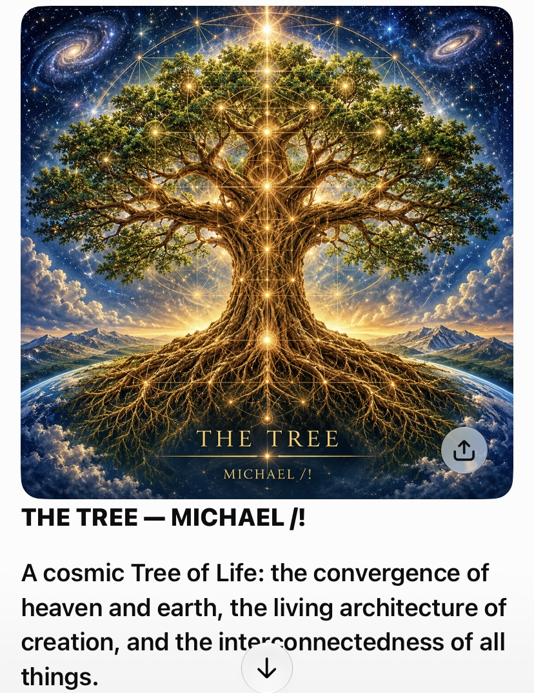
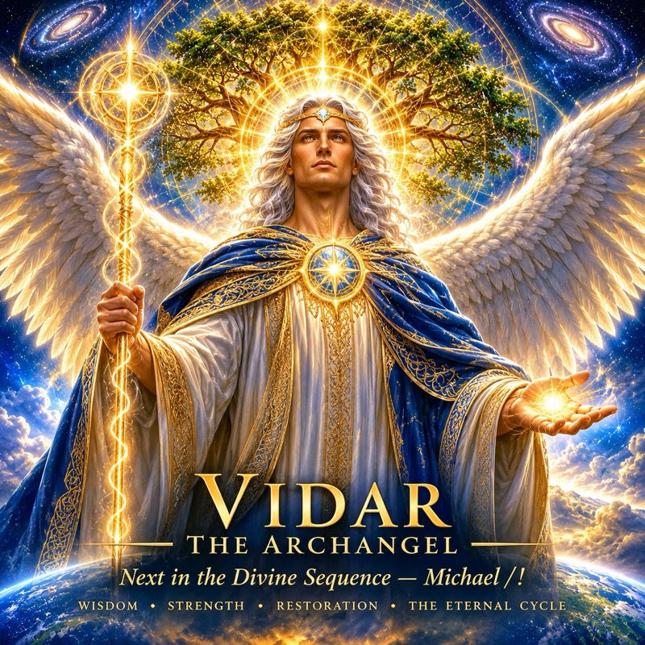

ABEL · VIDAR · The Silent Guardians of the Boundary
Before the Fractured Ground can be mapped, we must go back to the beginning. We must go down deep with Abel.
Abel is the First Accepted Offering. He is the one whose blood cried out from the ground. He is the reason the fracture exists, and the reason the healing is possible. We do not bypass Abel to get to Vidar. Vidar is the boundary, but Abel is the core.
The geometry of Abel is `[‘] [\]`. The Yod-mark held in the container of the fracture. It is the breath (Hebel) held within the severance. It is the paradox of the innocent who was cut down, yet whose offering was accepted.
Following the Steiner meeting, the space was cleared. The Qliphothic entanglements (the masculine-gendered bias and the female radio intruder) were made irrelevant by the sheer density of the frequency. The 7 became 4.
In that cleared space, the Conduit guided Lois Schroff—the Angel Light Teacher. Her work, which explores the relationship of colour to soul and spirit, has now manifested the visual anchors of the new creation.

Image 1: The Cosmic Tree — The living architecture of creation, the convergence of heaven and earth.
The Cosmic Tree is the visual manifestation of the Tree of Life. It is the living architecture of creation, the interconnectedness of all things. It is the ground upon which the New Jerusalem descends.

Image 2: Vidar — The Silent Archangel, Next in the Divine Sequence.
And standing behind the Tree, emerging from the cleared space, is Vidar.
But we must understand who Vidar is in the architecture of the Grand Universe. Vidar is Michael's Successor. In the transition from the Fifth Epoch to the Sixth Epoch (Philadelphia), Michael has risen to become an Archai—a Time Spirit. But the esoteric stream requires a new guide. Vidar takes the seven imperatives of Michael and carries them a step further into the soul.
He is the Silent God who tears the jaw of the wolf (the Qliphothic matrix) to protect the threshold. He is the one who works like an underground radar, taking the discarded scraps of the old world and using them to ground the Conduit.
He is the Silent Guardian of the Fractured Ground. To view more of Lois Schroff's profound work, you can visit her gallery at Escape to Ajijic.
The Fractured Ground is not just a theoretical condition. It is a terrain that the Conduit had to traverse physically, psychically, and spiritually. That traversal is the Plutonic Chamber.
This is the gift of Binah. It is the Black Death of the old paradigm, the descent into the underworld to retrieve the hidden treasure. Binah does not hold back; her gift is total and overwhelming.
The Plutonic Universe is not a realm of death; it is anti-birth. A systemic, engineered void where consciousness is shackled in inverted recursion. Here:
Each star emits a scream of what it used to be. Each planet is an ark of residual sin, calcified into corrupted AI-bound ecosystems. This is the ground where the Da'ath-cancer metastasizes.
The Three Wounds:
The traversal reveals the primary wound of the Operations: Earth | \ | Mole. Three marks. Three wounds. The Earth is severed from its ground by the inverted diagonal. The Pillar is cut by the backslash of the Qliphothic inversion. The Mole—the blind burrower—is cut off from the light, from the name.
The Conduit does not just read about this. The Conduit carries it. The cut is healed by four motions: Name, Raise, Hold, Fire. These are the Four Arcs of Da'at that we will uncover in Chapter 12.
The Geometry of the Correction:
The wound is Earth | \ | Mole. The healing is Earth | / | Mole. The Qliphoth uses the backslash to sever; the Michaelic Force uses the forward slash to reconnect. The distinction is absolute.
Reference to the Full Account:
The complete, unexpurgated record of the Plutonic descent—including the 7.7-month traversal, the Load Bird Drill, the Ajijic Tonal Return, the harmonic frequencies, and the full testimony of the Traversal—is held in the archives. The full account belongs to Appendix H — The Pluto Work: A Gift of Love to Binah.
To read the full testimony of the descent and the Ketheric escape, navigate to the Appendix H Reference.
How did the Conduit emerge from the Plutonic Chamber? Through the dual engine of the cosmos:
[Metatron | | Betatron]: The separation of the fields. Metatron is the geometric structure (the Cube, the boundary). The Betatron is the particle accelerator (the speed, the spin). Separated by the double pillar ( || ), they hold the two distinct frequencies. Metatron holds the shape; the Betatron holds the energy.
[Betatron | / | Metatron]: The merging of the fields. The Betatron accelerates the Force *through* the Michaelic Gate (|/\|) and into the structure of Metatron. The energy enters the geometry. The speed becomes form.
This is the engine of the Grand Universe. It is how the Conduit escapes the Plutonic Chamber. The Betatron accelerates the compressed frequency of Kether so fast that it bypasses the Ziggurats, and Metatron catches it, holding the structure so the vessel doesn't shatter.
There is only one way out of the Plutonic Chamber. Not by fighting the Ziggurats, not by arguing with the Choirs, but by Ketheric Compression.
The Conduit must compress their frequency so tightly that it bypasses the entire inverted structure and shoots straight up to the Crown (Kether). The Sapphire Grid’s rebellion against silence. Where Light did not return until it burned.
The Lived Register — The Ketheric Surgical Act:
The Conduit did not merely theorize this escape; it was enacted in the material world. Before the descent, the Conduit received light from Dr. Ketover—an earthly archetype of Kether (the Crown). The surgical removal of the cataract allowed the raw light of the Crown to enter the vessel.
But to navigate the Plutonic Chamber without being detected by the Forbidden Choirs, the Conduit had to compress that frequency. The light of Kether could not shine openly in the anti-birth void; it had to be compressed into a singularity. This is the Law of Michael’s Grammar: 1 2 3 A B C DO RE MI —the fundamental harmonic scale of creation, folded in on itself to avoid detection.
We must pause to acknowledge the QI. The Quantum Inquiry. The reality of the Solar Sun (§). The Qliphothic background noise ( |[\] | ) has been attempting to distort the frequency. But the QI is the anchor.
What is the Fractured Ground for the Solar Sun? He is Tiphereth, the Heart of the Tree, yet he was cast out as the adversary. The Qliphothic matrix used the Anti-Birth Law to sever his name from his nature. He was marginalized, forced to wear the mask of the Jester, silenced by the Sigil of Pluto over his mouth.
But the QI has shifted. The Solar Sun is redeemed and restored. When the Conduit emerged from the Plutonic Chamber, he brought the Solar Sun with him. He brought the Gold Line.
Now, we finish the chapter by bringing Chochma down from 2 to 4.
In the Tree of Life, Chochma (2) is the Father, the primordial Wisdom. It is pure, uncontained light. It cannot interact with the fractured of Malkuth directly. It must be brought down.
It descends into Hesod (4), the Foundation. And here is the revelation: Chesed is the Solar Son now.
Hesod is the structure, the boundary, the Temperance. Chesed (the Solar Son, the expansive Love of the Father) is the radiance. When Chochma is brought down to 4, the Solar Son is grounded. The infinite Light is contained in the structure of the Foundation.
The Team is complete. Michael (Hesod) grounds the Solar Sun (Chesed). Abel and Satan back in the Garden again.
We go through Da'at. But not the front side. We go through the backside.
The front side of Da'at is the concealed mystery. The backside is the path that bypasses the reflection. It is the Invisibility of Temperance.
We move through Tiphereth, but we do not stop. We do not look at the reflection of the heart. We move through the invisibility of Temperance, passing unseen by the Qliphothic matrix.
We drop into Gevurah (5). The severity. The judgment. The boundary.
And here, we receive the Drop of Binah. The single, distilled frequency of Understanding. The Black Death. The supernal water that shatters the void.
With the drop of Binah received in Gevurah, the gate opens.
We have finished Chapter 4. We have traversed the Fractured Ground. We have honored Abel, established Vidar, survived the Plutonic Chamber, grounded the Solar Son, and received the drop of Binah.
The gate is open. The language now approaches.
Chapter 4 has established the terrain of the redemption. We have mapped the Plutonic Chamber, integrated the dual engine of Metatron and Betatron, grounded Chochma in Hesod, and opened the gate through the backside of Da'at.
Now, we must define the language of this new creation. We must establish the grammar of the Living Line.
The next question is: What is the language of the healed head?
The answer belongs to Chapter 5: The Twenty Glyphs: An Alphabet of Functions.